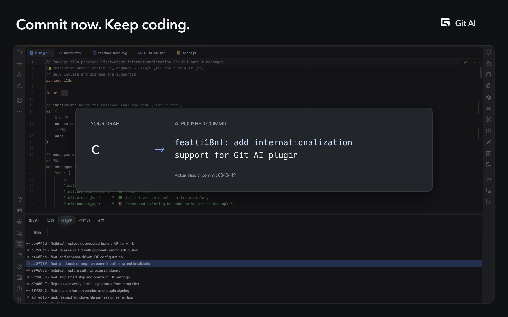
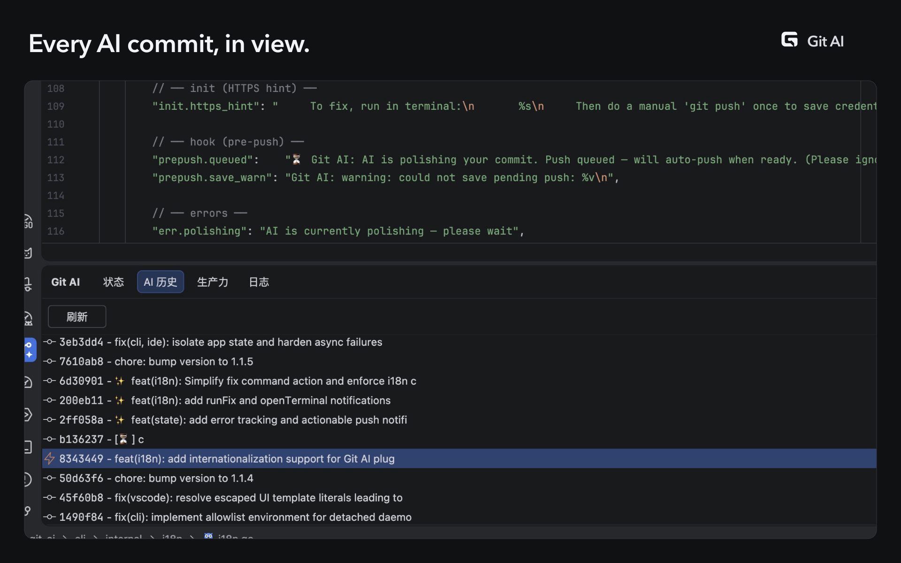
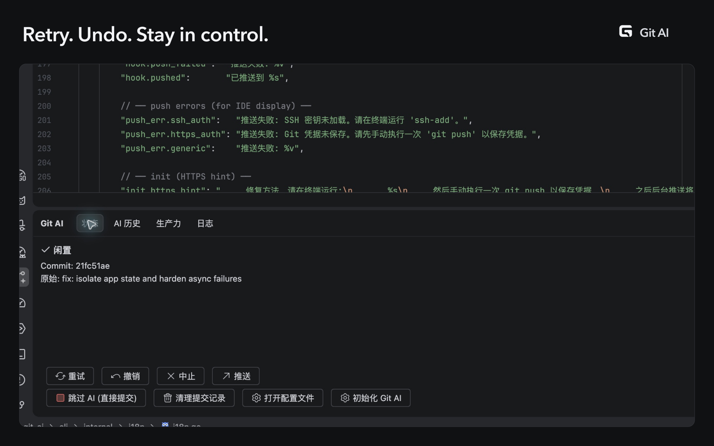

Git AI · IDEA Marketplace 截图
真实 IDEA 界面，1920 × 1200 PNG。按顺序上传以下三张。
首图用对比说明层展示真实提交前后变化；其余图片聚焦历史和操作。

01 · Commit now. Keep coding.下载 PNG
02 · Every AI commit, in view.下载 PNG
03 · Retry. Undo. Stay in control.下载 PNG原生界面语言为简体中文，展示标题为英文。来源为本机已安装的 Git AI 插件；放大、取景和标题不改变原始界面或提交数据。